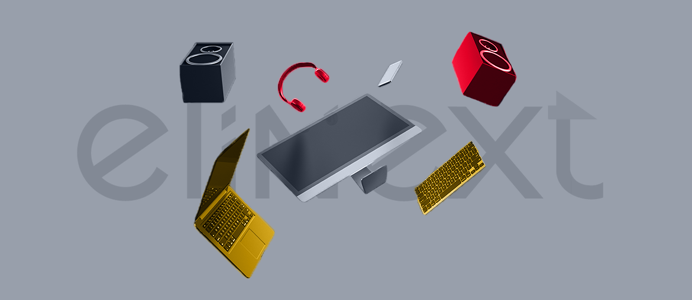

The AMP page audit showed redirect hops and slow first document response before users see the product story. First step: remove redirect hops, cache the page shell, and preload the main hero image.
Prepared for Joy Peerwala
Backend scale for Delaplex AMP and AI delivery
Delaplex is moving from consulting strength into productized AI platforms. AMP now needs fast, reliable backend services that support assets, integrations, analytics, and mobile-friendly access.
We saw Delaplex hiring a Backend Service Engineer for Python, Java, AWS, microservices, search, and event-driven work. That looks like a need to add senior backend capacity without slowing Joy's delivery teams.
Our read
The Backend Service Engineer signal says Delaplex is scaling complex server-side work, not just filling a seat. AMP is a real product surface: Delaplex says it is web-based, mobile friendly, AWS powered, and built around integrations plus a REST API. That mix creates pressure on API design, search, events, and release quality. If the same team supports client work, KaptizeAI, and AMP, senior backend gaps can slow demos and fixes. Joy needs capacity that can join global teams and improve the platform while the roadmap keeps moving.
Where we'd start
AMP promises SAML, LDAP, Slack, JAMF, Kandji, and REST API integrations. Next step: build a small contract-test pack around the highest-value integrations before adding more backend features.
What we'd do
Use a dedicated squad under Delaplex's PO or PM for a six-week backend pilot. The goal is safer AMP delivery, not a broad rewrite.
Backend tech lead
2 senior Python engineers
DevOps engineer
QA automation engineer
Map the backend
Map AMP services, data paths, and integration contracts, then flag the backend work that blocks demos or customer onboarding.
Harden the services
Harden FastAPI services, event flows, and search jobs with load tests, tracing, and clear retry rules.
Raise release confidence
Build CI/CD checks for API contracts, security basics, and regression tests across AWS, Docker, and Kubernetes.
Hand over cleanly
Ship weekly demos with Joy's team, then hand over runbooks for support, release, and scaling decisions.
Relevant stack: Python, Java, Node.js, React, AWS, Docker.
Who is Elinext
Elinext is a full-cycle software development partner since 1997. We have about 700 in-house specialists and no freelancers. For Delaplex, the fit is backend, QA, DevOps, and secure delivery. Our teams work with Java, .NET, Python, Node.js, React, AWS, and mobile stacks. We hold ISO 9001 and ISO 27001 certifications. Clients include Siemens, Broadcom, Volkswagen, TRUMPF, and TUI, which shows our work fits large enterprise delivery. That is the base for the squad above. Senior engineers can support product code, tests, and release flow.
Proof

Continuous microservices for warehouse management
Elinext built backend services, Web API work, QA, and operational fixes for a German logistics platform. The work reduced manual label effort, errors, and overhead.
Read the case
Inventory management web platform
Elinext built a role-based web client-server app with Java, Spring, PostgreSQL, Angular, and Docker. The platform simplified asset management in one place.
Read the case